Grundlæggende UX/UI
Løsning
Herunder: Emnesite - Ten Pillars Coffee - 03.01.01
Proces & Læring
I UX/UI-temaet arbejdede jeg med samspillet mellem brugere og digitale brugergrænseflader med fokus på research, design, test og procesdokumentation. Vi blev introduceret til både kvalitative og kvantitative metoder til dataindsamling, herunder brugerinterviews, spørgeskemaer og brugertest, samt værktøjer som Figma til design og prototyping. Formålet var at basere designbeslutninger på reelle brugerindsigter frem for antagelser og mavefornemmelser.
I mit projekt anvendte jeg dataindsamling aktivt til at definere problemstilling og designvalg. Jeg planlagde og gennemførte brugertests og anvendte resultaterne til at justere mit design, blandt andet i forhold til navigation og visuel struktur. I designfasen arbejdede jeg med udvikling af logo, ikoner og UI-komponenter i Figma, som senere skulle omsættes til et kodet MVP.
Samtidig dokumenterede jeg min proces løbende for at kunne formidle valg, fravalg og resultater til interessenter. Jeg valgte denne brugerdrevne tilgang frem for at designe ud fra egne præferencer, fordi UX-metoderne gav mig et mere solidt beslutningsgrundlag.
Selvom jeg var udfordret på kodningsdelen – særligt CSS-struktur og responsivt layout – lærte jeg vigtigheden af korrekt procesplanlægning, mobile-first-principper og at overholde milepæle. Temaet har styrket mine kompetencer inden for processtruktur, dataindsamling og formidling af UX-arbejde, og jeg tager især erfaring med research, designprocesser og brugertest med videre til kommende projekter og mit CV.
Udvalgte delopgaver
Logodesign
Brugertest
Research og dataindsamling